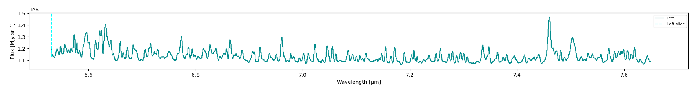
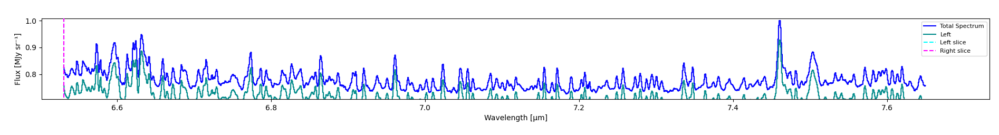
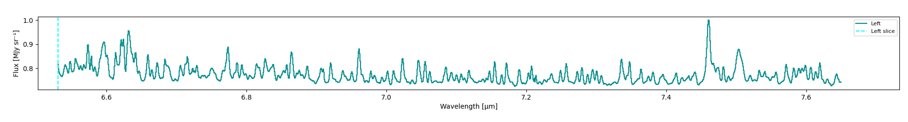
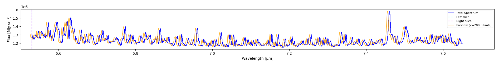
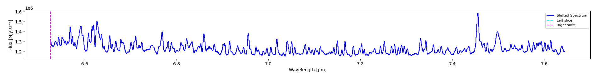

Spectrum Display
Controls for how the spectrum panel normalizes and Doppler-shifts the Full, Left Region, and Right Region spectra. These sit in the always-visible control row above the spectrum plot (see GUI Overview), and apply regardless of which tab is active.
Note
This page assumes you’re already familiar with the Full / Left Region / Right Region tabs; see Selecting Regions for how a region selection becomes its own spectrum.
Normalization
A Left Region tab’s spectrum, unnormalized, showing raw flux in the cube’s own units:

Normalize
A single global toggle. When on, every displayed spectrum (Full, Left, Right) is divided by the Full spectrum’s own peak value:
On the Full tab, this normalizes the spectrum to itself (peak = 1).
On Left/Right, values are shown relative to Full’s peak, letting you see how much of the total spectrum’s peak a selected region actually contributes.
Full tab, with Show Left overlaid and Normalize on. Total Spectrum peaks at 1.0, while Left peaks lower, showing it accounts for less than the full peak at that wavelength:

Self-Normalize Left / Self-Normalize Right
Per-side overrides, only meaningful while Normalize is on. Instead of scaling relative to Full’s peak, that side is scaled to its own peak, useful for studying a region’s own line shape independent of how much it contributes to the total spectrum.
The same Left tab with Self-Normalize Left on instead. Now Left’s own peak reaches 1.0:

Control |
What it does |
|---|---|
Normalize |
Divide every displayed spectrum by the Full spectrum’s own peak |
Self-Normalize Left |
While Normalize is on, normalize the Left region to its own peak instead of Full’s |
Self-Normalize Right |
While Normalize is on, normalize the Right region to its own peak instead of Full’s |
Doppler Shifting
Each of the Full / Left Region / Right Region tabs can be Doppler-shifted independently: shifting Left never touches Full or Right.
Select the tab you want to shift (Full, Left Region, or Right Region). For Left/Right, that side must already have a region selected.
Click Shift and enter a systemic velocity in km/s. This previews the shift as an orange overlay on that tab’s spectrum, without changing the underlying data yet.
Click Apply Shift to commit it (after a confirmation prompt), or Cancel Preview to discard it.
Click Revert Shift at any time to reset that tab back to its original, unshifted wavelength.
A pending 200 km/s preview on the Full tab. The orange line is the preview, overlaid on the unshifted Total Spectrum:

The shift is multiplicative (\(\lambda_{new} = \lambda / (1 + v/c)\)), composed on top of any shift already applied to that tab, so repeated previews refine incrementally rather than starting over from the original wavelength each time.
After clicking Apply Shift, the preview is gone and the tab’s own trace is redrawn at the shifted wavelength, labeled Shifted Spectrum:

Note
Applying a shift to the Full tab also updates the cube’s own wavelength axis, since Gaussian fitting, continuum subtraction, HITRAN line-matching, and flux extraction all read it directly. Shifting Left or Right only affects that tab’s own displayed spectrum.
Control |
What it does |
|---|---|
Shift |
Preview a Doppler shift on the active tab’s spectrum |
Apply Shift |
Commit the previewed shift (permanent until reverted) |
Cancel Preview |
Discard the pending preview without applying it |
Revert Shift |
Reset the active tab back to its original, unshifted wavelength |
Next Steps
Selecting Regions for how Left/Right get their own spectra in the first place
1D Spectrum Fitting to fit a line on the (possibly shifted or normalized) active tab’s spectrum